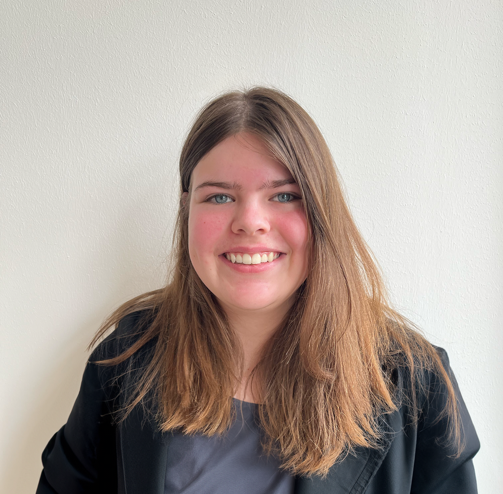

Student Communicatie & Multimedia Design aan de Hanze op zoek naar een stage.
Ik ben actief bezig met Grafisch ontwerp en Front-end Development. Hierin blijf ik me ontwikkelen in design thinking, verschillende design tools en code talen.
Ik vind structuur binnen creative processen belangrijk. Tijdens gezamenlijke projecten neem ik graag rollen op me in planning en/of sturing.